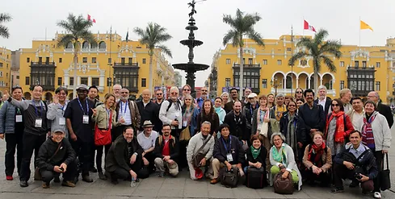
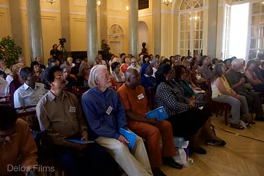
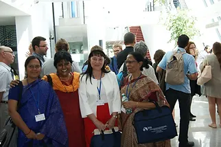

Welcome to the International Society for Universal Dialogue's (ISUD) website. We are an organization composed of scholars whose goal is to spread information regarding international dialogue. We also focus on discussing questions and finding answers to universal problems such as human rights and world peace.
  If you would like to read more about us please visit our about us page. This is where you can find information regarding our history, staff, events, and more.
If you would like to get in touch with us please fill out the form found on our contact page.